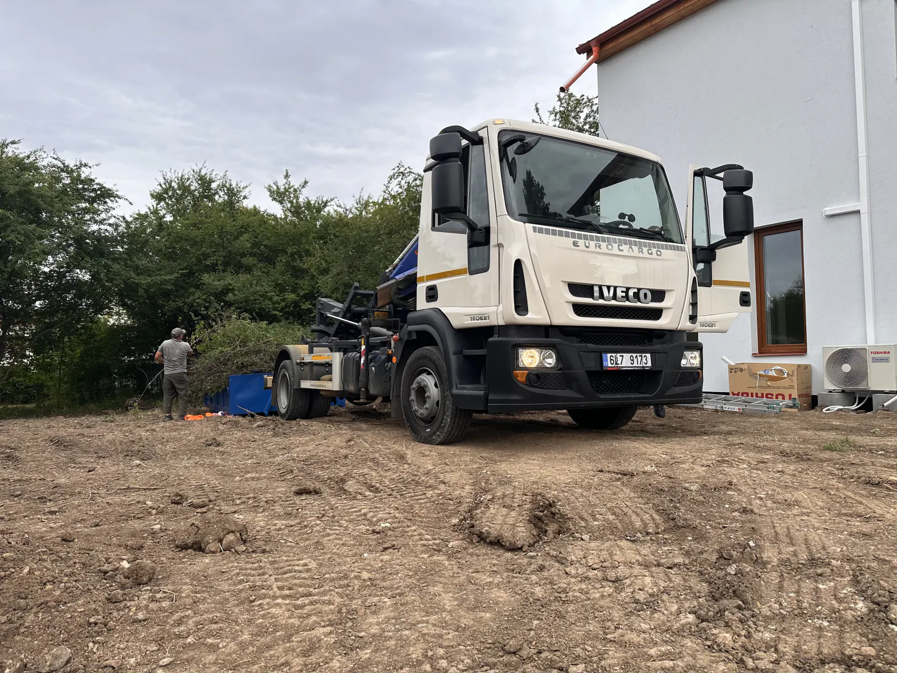
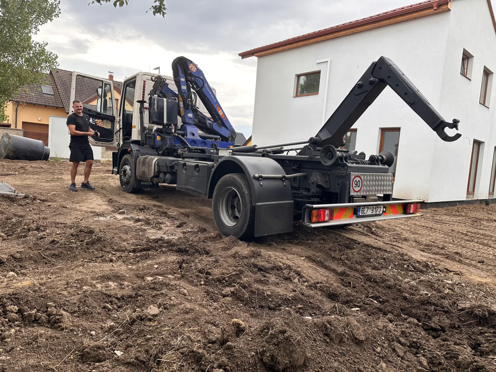
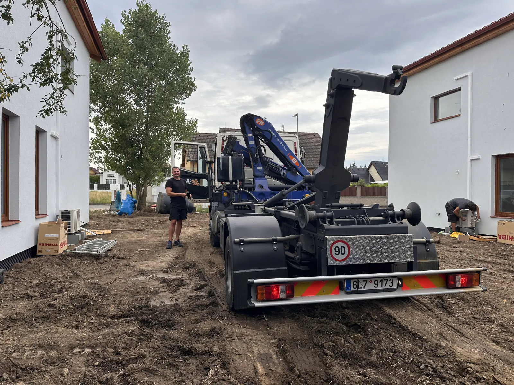
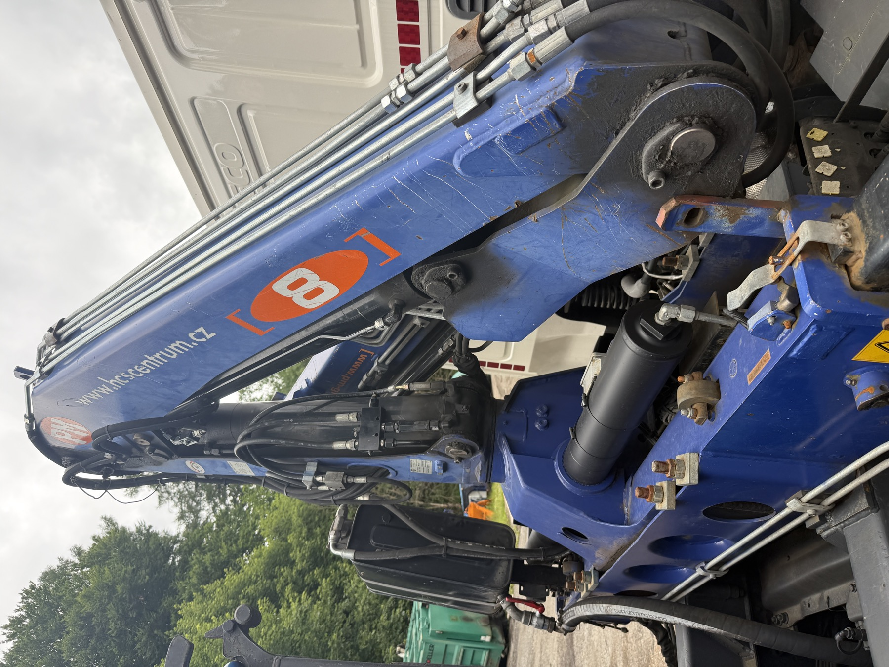

Skutečné realizace a ověření
Reálné výjezdy, vlastní technika a ověřitelná firma
Prohlédněte si zdokumentovaný výjezd kontejnerového vozu k rodinnému domu. Bez vymyšlených recenzí a bez zveřejnění přesné adresy zákazníka.
Nová realizace
Kontejnerový vůz na staveništi u rodinného domu
Fotografie zachycují skutečný výjezd vlastního Iveca na nezpevněný pozemek mezi domy. Na podobné zakázce rozhoduje bezpečný příjezd, únosnost povrchu a dostatek místa pro ustavení auta a manipulaci s kontejnerem.
Fotky z místa
Příjezd, technika a prostor pro manipulaci
Každý záběr ukazuje jinou praktickou část výjezdu. Přesnou adresu ani údaje zákazníka nezveřejňujeme.

Příjezd na pozemekVlastní auto stojí přímo na staveništi u domu.
Záběr ukazuje typ prostoru a povrchu, který je dobré poslat na fotce ještě před objednáním.

Vlastní technika a obsluhaNa místo přijíždí vlastní auto s konkrétní obsluhou.
Na fotografii je kontejnerová nástavba, hydraulická ruka i obsluha přímo v terénu.

Prostor mezi domyPřed ustavením auta se kontroluje průjezd, podloží a okolí.
Zadní záběr dává reálnou představu o místě, které vůz potřebuje pro bezpečnou práci.
Ověřitelnost
Firmu si můžete ověřit mimo tento web
Kontejnerovka.cz uvádí reálného provozovatele, IČO, DIČ, adresu a veřejné profily. Pro zákazníka to znamená jasné „komu volám“ ještě před tím, než pošle poptávku.
Co si ověříte hned
Než objednáte, víte komu voláte
Kontejnerovka.cz neskrývá provozovatele ani kontakt. Telefon, e-mail, adresa, IČO, DIČ a veřejné profily jsou uvedené na webu i mimo něj.
Další důkazy
Vlastní technika zblízka
Novou realizaci doplňují detailní fotografie auta, hydraulické ruky a kontejneru. Všechny snímky jsou z vlastních podkladů Kontejnerovka.cz.

TechnikaNa webu je čistý profil skutečného auta z provozu, ne ilustrační fotka.
Kontejnerová doprava, odvoz i dovoz materiálu se řeší vlastním autem s rukou a podle konkrétní adresy.

Ruka a hydraulikaNa detailu je skutečná technika, která na zakázku opravdu přijíždí.
Je vidět, že web stojí na vlastním autě a vlastním vybavení, ne na obecných SEO ilustracích.

KontejnerNa webu je skutečný kontejner v provozu, ne vypůjčený vizuál.
Dává smysl hlavně pro přistavení, odvoz, sklápění a praktickou představu, co na místě opravdu přijede.
Stav referencí
První realizace je online. Další přidám jen s vlastním podkladem.
Web dál nebude doplňovat smyšlené recenze ani cizí fotografie. Ověřit si můžete reálný výjezd, firmu, techniku, kontakt, obchodní podmínky a veřejný Google profil provozovny.
Co si ověřit ještě před objednáním
Vedle fotek z realizace se podívejte na techniku, firemní údaje a způsob výpočtu ceny. Společně dávají konkrétnější obrázek než anonymní marketingové sliby.